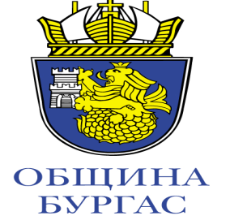
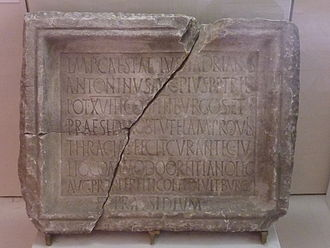
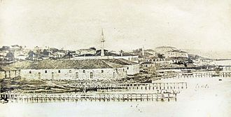

 Има няколко версии за произхода на името Бургас. Повечето от тях се отнасят до латинската дума Burgus, (Бургос) или гръцката Πύργος (Пюргос).И двете думи,, имащи за основа общ индоевропейски корен, имат значение кула,, стражева кула, крепост или закрепостено място. Според други, версии думата произлизаот германското borg с значение планинско, възвишение и масив.Според проф. Кирил Влахов „пюргос“ е дума от, тракийски произход, който също е индоевропейски.Става дума за, римски бургус, които според надпис от 154 – 155 г., намерен в, село Пънчево е изграден по времето на император Антонин Пий (138 – 161), т.е. по времето на управителя на Деултум Юлиус Комодус Орфитисмус и, който по-късно става синоним на населеното място. Сходен произход има, името на испанския град Бургос.[1]
 През 1905 г. в Бургас се учредява Бургаската търговско–индустриална камара. През 1912 г. е разрушена джамията Челесис заде Мустафа (построена през 19 век). Тя е последната турска джамия в града и се е намирала в градинката на гарата (днес площад Царица Йоана), пред митницата и около нея се е намирало турското гробище. След нейното разрушаване остава само така аречената татарска джамия Азизе (издигната в чест на султан Абдул Азис) в карето между площад Тройката и площад Баба Ганка. Тя е била с високо минаре, което е съборено през 1940-те. Татарската джамия е разрушена изцяло през 1970-те[12], когато започва строежа на бургаския ЦУМ и днес Бургас е единствения голям български град без мюсюлмански храм.